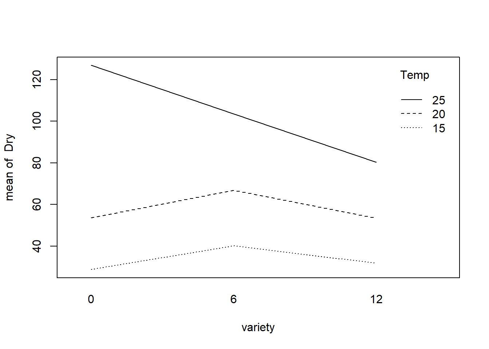
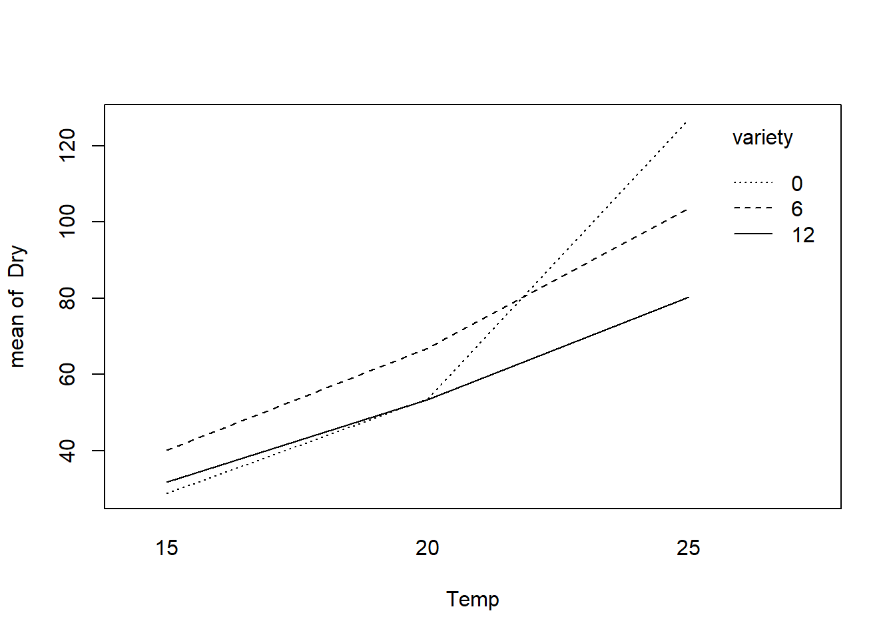

a <- 5
dfa <- a-1
b <- 3
dfb <- b-1
dfab <- dfa * dfb
nT<- a * b * 6
dfe <- nT - (a * b)
SSA <- 375
SSB <- 462
SSAB <- 38
SST <- 1128
SSE <- SST - SSA - SSB - SSAB
MSA <- SSA / dfa
MSB <- SSB / dfb
MSAB <- SSAB / dfab
MSE <- SSE / dfe
F_A <- MSA / MSE
F_B <- MSB / MSE
F_AB <- MSAB / MSE
P_A <- pf(F_A, dfa, dfe, lower.tail = F)
P_B <- pf(F_B, dfb, dfe, lower.tail = F)
P_AB <- pf(F_AB, dfab, dfe, lower.tail = F)ST-512-HW5-Yefrid_Cordoba
Problem 1
a
Complete the ANOVA table
| Source | df | SS | MS | F-value | P-value |
|---|---|---|---|---|---|
| Factor A | 4 | 375 | 93.75 | 27.79 | 3.652665^{-14} |
| Factor B | 2 | 462 | 231 | 68.48 | 1.2037685^{-17} |
| A:B | 8 | 38 | 4.75 | 1.41 | 0.2071141 |
| Residual | 75 | 253 | 3.37 | ||
| Total | 89 | 1128 |
b
Assuming an \(\alpha = 0.05\), and given that this is higher than the p-value for the interaction term (0.2071141) we conclude that there is no interaction between the two factors.
c
Testing for levels of factor: since the p-value (3.652665^{-14})for the factor A is much smaller than the \(\alpha = 0.05\), we conclude that factor A have an effect in the mean response.
d
Testing for levels of factor B: since the p-value (1.2037685^{-17})for the factor B is much smaller than the \(\alpha = 0.05\), we conclude that factor B have an effect in the mean response.
Problem 2
a
Two way fixed model where interaction is not significant.
a <- 4
b <- 3
n <- 3
nT <- a * b * n
SSE <- 720
dfa <- a - 1
dfb <- b - 1
dfe <- nT - (a * b)
MSE <- SSE / dfeTukey’s HSD factor A
SE <- sqrt(2*MSE/(b*n))
SE[1] 2.581989qa <- qtukey(1-0.05, a, dfe)/sqrt(2)
qa[1] 2.758609MEa <- SE * qa
MEa[1] 7.122697b
Tukey’s HSD factor B
SE <- sqrt(2*MSE/(a*n))
SE[1] 2.236068qb <- qtukey(1-0.05, b, dfe)/sqrt(2)
qb[1] 2.497287MEb <- SE * qb
MEb[1] 5.584104Problem 3
a
Factor effects model \(y_{ijk} = \mu + \alpha_i + \beta_j + (\alpha\beta)_{ij} +\epsilon_{ijk}\)
Where:
\(i = 1, 2, 3\) varieties
\(j = 1, 2, 3\) Temperatures
\(k = 1,2,..., 8\) Pots availables
\(y_{ijk} =\) the observation in the \(i^{th}\) variety exposed to the \(i^{th}\) temperature, \(k^{th}\) pot.
\(\mu =\) a constant
\(\alpha_i =\) the effect of the \(i^{th}\) variety.
\(\beta_j =\) the effect of the \(j^{th}\) temperature.
\((\alpha\beta)_{ij}\) interaction of the variety and temperature.
\(\epsilon_{ijk} =\) random error of the \(k^{th}\) pot for the \(i^{th}\) variety exposed to \(j^{th}\) temperature.
variety <- factor(rep(c(0, 6, 12), each = 3))
Temp <- factor(rep(c(15, 20, 25), times = 3))
Dry <- c(28.71, 53.57, 126.86, 40.14, 66.86, 103.57, 31.71, 53.43, 80.26)
data <- data.frame(variety, Temp, Dry)c
interaction.plot(variety, Temp, Dry)
interaction.plot(Temp, variety, Dry)